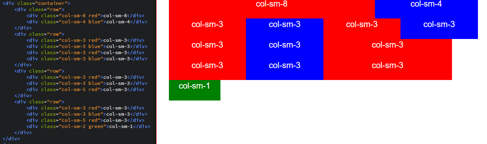
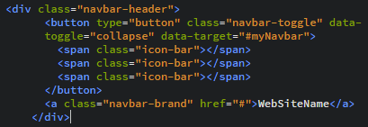

WARSZTATY WEBOWE Mikołaj Szumigalski
Powrót
Zajęcia 9
Bootstrap 3
1. Czym jest Bootstrap
Poznaliśmy już CSS, który służy nam do stylowania naszych stron internetowych. Jak się przekonaliśy do potrafi być żmudna i czasochłonna sprawa, pozycjonowanie elementów, responsywność... Nie da się ukryć, że muszą być narzędzia, które ułatwiają prace nad stylami. Jednym z takich narzędzi jest właśnie Bootstrap. Został on stworzony przez programistów Twittera i bardzo przydaje się jeśli chcemy mieć responsywną i dość elegancką stronę, z dużo mniejszym nakładem czasowym. Bootstrap to tak naprawdę zestaw klas, które są już zaimplementowane, a my tylko je dodajemy do projektu.
2. Skąd pobrać Bootstrap'a
Bootstrap jest w sumie takim arkuszem stylów, więc link do niego umieszczamy własnie tam. Możemy go pobrać stąd. Możemy go również pobrać ze strony głównej
2. Tworzymy stronkę z Bootsrap'em 3
Poniżej znajdziecie link do prostej stronki, bez żadnych stylów. Zobaczymy jak szybko, praktycznie bez dodawania własnch stylów, jedynie dopisując gotowe klasy stworzyć dość schludną i responsywną stronkę. Uwaga, ze strony głównej, można obecnie pobrać już najnowszą wesję Bootstrapa 4. Nie wszystkie elementy z dzisiejszej lekcji mogą działać poprawnie, więc proszę o dodanie nagłówka o którym wspominam w następnym akapicie
3. Dodajemy nagłówki bootstrapa
Pobierzmy i dodajmy do sekcji head następujące nagłówki link do nich tu. Pierwszy z nich dopasowuje nam stronę do urządzenia, a drugi importuje style, klasy które nam będą potrzebne. Ostatnie 2 imortują funkcje, które przydadzą się nam do animacji.
4. Kontener
Zacznijmy od wyglądu strony. Klasa containerdodaje do naszej strony marginesy, które sprawiają, że stonę czyta się wygodniej na szerokich urządzeniach. Zauważmy, że p ozwęzeniu ekranu marginesy się zminiejszają.
5. 12stkowy podział strony
Do pełnego zrozumienia jak to działa zachęcam do lektury tego artykułu. Bootstrap pozwala nam wygodnie podzielić nam artykuł na kolumny, które dostosowują swoją wielkość do ekranu komputera. Służą do tego klasy col. Jeśli chcemy aby kolumny przechodziły do następnej linii gdy ekran będzie mniejszy dopisujemy do klasy -sm, a na końcu liczbę z przedziału od 1 do 12. Zobaczmy przykład:
{kind=link}
6. Jumbotron
Prosta klasa jumbotron, która tworzy nam szare tło z marginesami. Przydatne na początku stronki.
7. Small
Klasa small służy do zmniejszenia fragmentu nagłówka. Zmienia też kolor tego fragmentu, przydatne w rozbudowanych nagłówkach
8. Obrazki
Do obrazków również można dodać klasy, np klasa img-rounded zaokrągli rogi obrazka, a klasa img-circle sprawi, że obrazki będą okręgami. Oczywiście można te efekty osiągnąć łatwo sami, ale taki rozwiąznie jest dużo szybsze i łatwiejsze do zapamiętania.
9. Listy
Bootstrap oferuje nam zupełnie inny wygląd list do tych do których przywykliśmy. Bardziej przypomina tabelkę, ale wygląda całkiem dobrze. Do elementu ol/ul (wyświetlają się tak samo) dodajemy klasę list-group, a do elementów li dodajemy klasę list-group-item
10. Tabele
Klasa do stylowania tabeli jest bardzo intuicyjna i nazywa się table. Tabele nie posiadają wsyzstkich obramowń, jednak wyglądają dzięki temu dość powiedziałbym "nowowcześnie". Tutaj można zobaczyć jak jeszcze można modyfikować tabele, kolory itp.
11. Animowane ukrywanie/ odkrywanie
Bardzo przydatna rzecz, szczególnie, że normalnie taki efekt jest dosyć długi do napisania (CSS możliwia towrzenie animacji). Potrzebujemy najpierw elementu, który będzie nam "uruchamiał" animację. Nadajemy mu 2 atrybuty: data-toggle="collapse" data-target="#demo" przy czym demo to id elementu który chcemy odkryć. Elementowi, który chcemy odkryć nadajemy oczywiście jakieś id oraz klasę class="collapse"
12. Responsywne menu główne
Tutaj będzie zdecydowanie najwięcej zabawy. Poraz kolejny odsyłam do lektury tego artykułu, ponieważ jest to bardziej skomplikowane od poprzednich rzeczy. Na początku naszej klasie nav nadajemy klasy navbar navbar-inverse. Pierwsza jest do tworzenia menu, druga, odwraca kolory tła i czcionki. Następnie wewnątrz dodajemy klasę container-fluid, ponieważ chcemy, aby menu było na całej szerokości strony, a nie z marginesami jak reszta. Potem tworzymy tzw. nagłowek menu. Będzie odpowiadał za przycisk odsyłający do strony głównej i tworzenia tzw. ikonki hamburger, która rozwija listę menu gdy ekran jest zbyt mały na pomieszczenie elementów menu. Wygląda to tak:
 Pamiętajmy o klasie navbar-brand dla głownego odsyłacza.
Pozostałe elementy strony "opakujemy" div'em, który będzie posiadał klasy collapse navbar-collapse, które będą odpowiadać za "schowanie się" elementów gdy ekran będzie niewielkich rozmiarów. Oprócz tego liście zawierającej pozostałe elementy nadajemy klasy nav navbar-nav, aby wyświetlały się odpowiednio poziomo itp. Pozostało nam ukryć elementy menu które są roziwjane do podelementów. Do tego musimy najpierw nadać elementowi li klasę dropdown. Potem elementowi a nadajemy klasę dropdown-toggle, oraz atrybut data-toggle="dropdown". Następnie dodajemy do elementu ul klasę dropdown-menu. Żeby użytkownik wiedział, że element menu jest rozwijany można też dodać element span z klasą caret, który stworzy nam charakterystyczny trójkąt
{kind=link}
13. Ostatnie poprawki
Bardzo Was zachęcam do zabawy z efektem końcowym. Można np. ostylować stopkę, zmienić czcionkę ewentuanie zajrzeć na stronę z tutorialem i spróbować dodać do tej strony inne elementy, które nie były omawiane. W razie problemów slużę pomocą. Można też spróbować stworzyć od nowa własną stronkę w zależności czy starczy czasu.
Praca domowa
Absolutnie nie wymagam korzystania z Bootstrapa w projekcie (ale jeśli ktoś chce to oczywiście może)! Jako pracę domową proszę stworzyć katalog o nazwie "BOOTSTRAP", a w nim stronkę o nazwie index.html, która będzie wykorzystywać przynajmniej 10 różnych klas jakie oferuje nam Bootstrap (mogą być jakieś nieomawiane)